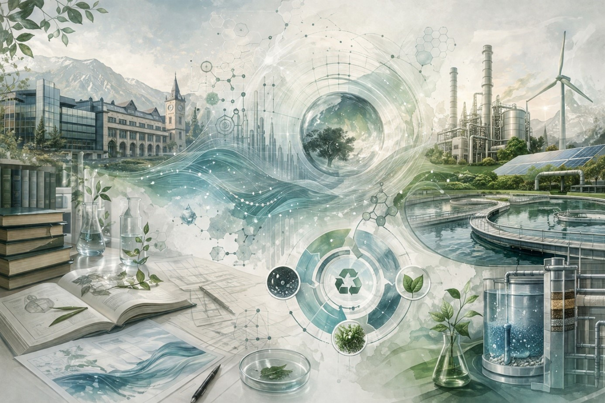

Beş operasyonel eksen üzerine kurulu proje ekosistemi, kurumsal ve akademik deneyimin kesişiminde şekillenmektedir.

NEKS Çevre Teknolojileri, çevre mühendisliğini akademik literatürün güncel verisini sahanın pragmatik ihtiyaçlarıyla sentezleyen, metodoloji odaklı bir çözüm ortağı olarak ele alır.
Ürün, proses veya sistem tasarımlarında "beşikten mezara" prensibini uyguluyoruz. Toksik hammadde eliminasyonu, demontaj kolaylığı ve ürün ömrünün uzatılması kriterlerini mühendislik hesaplamalarına entegre ediyoruz.
Bilimsel olarak ölçülemeyen bir etkinin yönetilmesi mümkün değildir. ISO 14040/44 uyumlu LCA, AB Yeşil Mutabakatı ve SKDM uyum yol haritaları ile kurumsal sürdürülebilirliği analitik verilere dayandırıyoruz.
Arıtma çamurlarının yönetimi, çevresel risklerin ve bertaraf maliyetlerinin en yoğun olduğu uzmanlık alanlarından biridir. NEKS bu süreci "kaynak geri kazanımı" perspektifiyle yeniden kurgular.
Sanayi kuruluşlarının karşılaştığı atıksu, hava emisyonu ve katı atık problemlerine mühendislik etiğine uygun, uzun vadeli ve ekonomik olarak rasyonel çözümler geliştiriyoruz.
Akademik araştırmaların laboratuvar ortamından endüstriyel sahaya taşınması NEKS'in temel varlık sebebidir. Kavramsal tasarımdan ticarileşmeye kadar teknolojik olgunluk seviyelerini yönetiyoruz.
Belediyeler ve kamu otoriteleri için kentsel katı atık yönetimi, depolama sahası tasarımı ve işletme planlaması konularında teknik danışmanlık sağlıyoruz.
Sanayi kuruluşlarına çevre mühendisliği çözümleri
Belediye ve kamu altyapı danışmanlığı
Laboratuvardan sahaya teknoloji transferi
Üniversite-sanayi entegrasyonu
Ulusal ve uluslararası proje finansmanı